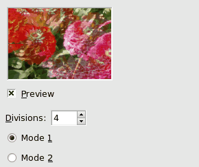

You can find this filter through
Filters → Map → Illusion.
With this filter, your image (active layer or selection) looks like
a kaleidoscope. This filter duplicates your image in many copies, more
or less dimmed and split, and puts them around the center of the image.
10.5.2.
Options
Figure 16.205.
“Illusion” filter options

Divisions
That's the number of copies you want to apply to image. This
value varies from -32 to 64. Negative values invert
kaleidoscope rotation.
Modes
You have two arrangement modes for copies in image:
Figure 16.206.
From left to right: original image, mode 1,
mode 2, with Divisions=4